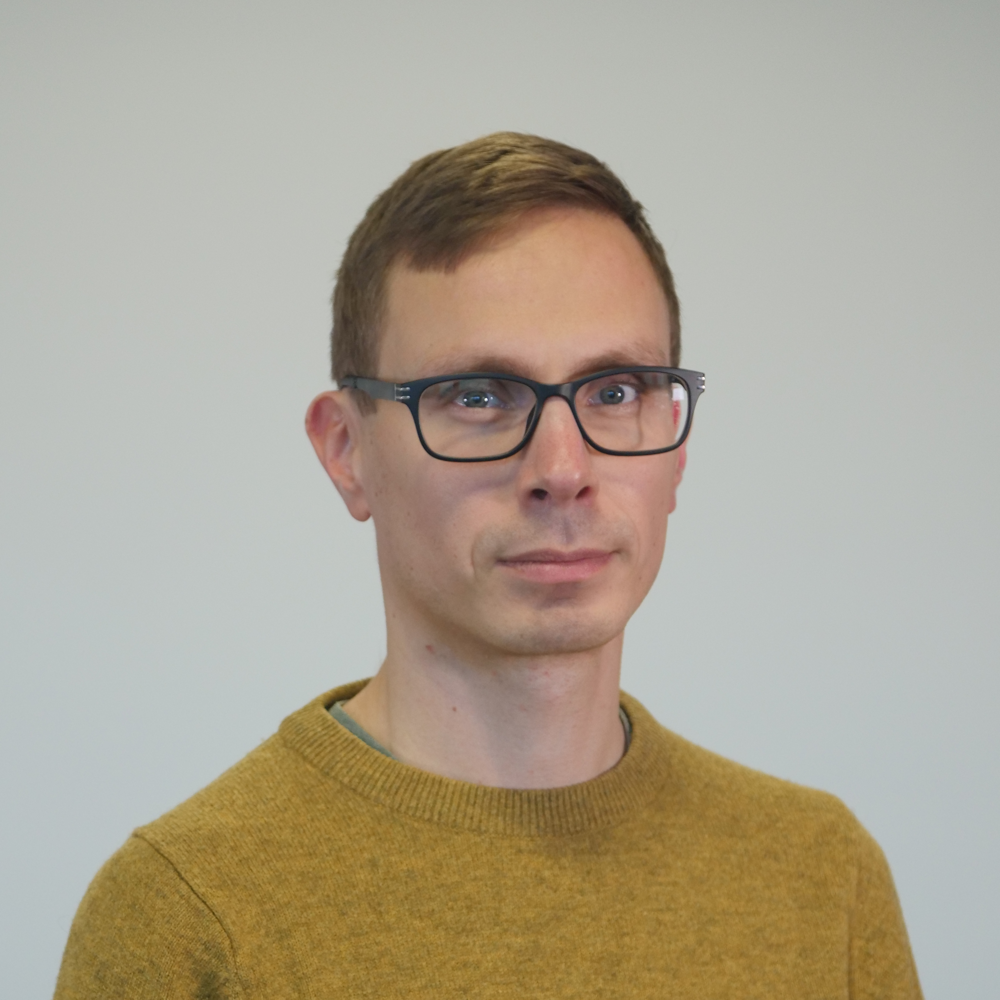

Lecturer, 09/2021-
School of Computer Science and Mathematics, Liverpool John Moores University, UK.
University Teacher, 10/2020-09/21
Department of Computer Science, University of Liverpool, UK.
Research Associate, 03/2019-09/2020
Department of Computer Science, University of Oxford, UK.
In ERC project "Analysis, Verification, and Synthesis of Infinite-State Systems" led by Prof. Joël Ouaknine.
Lecturer, 10/2019-09/2020
Jesus College, University of Oxford, UK.
Research Associate, 06/2018-02/2019
Department of Computer Science, University of Oxford, UK.
In ERC project "Algorithmic Verification of String Manipulating Programs" led by Prof. Anthony W. Lin.
Research Associate, 01/2018-05/2018
Department of Computer Science, University of Liverpool, UK.
In EPSRC project "Reachability problems for words, matrices and maps" led by Prof. Igor Potapov.
Project Reseacher, 10/2013-09/2014
Dept of Mathematics and Statistics, University of Turku, Finland
SET for BRITAIN 2016, finalist in a poster competition in the House of Commons
Nokia Foundation's Nokia Scholarship 2014
Postgraduate Research Studentship, Dept of Computer Science, University of Liverpool, 10/2014-09/2017
PhD in Computer Science, 10/2014-07/2018
Title of PhD Thesis: Reachability games and related matrix and word problems
Supervisors: Prof. Igor Potapov, Dr Vesa Halava, and Prof. Paul Spirakis
Department of Computer Science, University of Liverpool, UK.
M.Sc. in Mathematics, 02/2013-08/2013
Thesis: “On Decidability of the Mortality Problem for Small Integer Matrices” (in Finnish)
Dept of Mathematics and Statistics,
University of Turku, Finland
B.Sc. in Mathematics, 09/2007-02/2013
Dept of Mathematics and Statistics,
University of Turku, Finland
On decidability and complexity of low-dimensional robot games,
R.N., Igor Potapov, Julien Reichert, in Journal of Computer and System Sciences 107: 124-141, 2020.
Monadic Decomposability of Regular Relations,
Pablo Barceló, Chih-Duo Hong, Xuan-Bach Le, Anthony W. Lin, R.N., in proc. of ICALP 2019, LIPIcs 132: 103:1-103:14, 2019.
Reachability Problems in Nondeterministic Polynomial Maps on the Integers,
Sang-Ki Ko, R.N., Igor Potapov, in proc. of DLT 2018, LNCS 11088: 465-477, 2018.
On the Identity Problem for the Special Linear Group and the Heisenberg Group,
Sang-Ki Ko, R.N., Igor Potapov in proc. of ICALP 2018, LIPIcs 107 132:1-132:15, 2018.
Reachability problem for polynomial iteration is PSPACE-complete,
R.N. in proc. of RP 2017, LNCS 10506: 132-143, 2017.
Small Semi-Thue System Universal with Respect to the Termination Problem,
Vesa Halava, Yuri Matiyasevich, R.N., in Fundamenta Informaticae 154(1-4): 177-184, 2017.
Weighted Automata on Infinite Words in the Context of Attacker-Defender Games,
Tero Harju, Vesa Halava, R.N., Igor Potapov, in Information and Computation 255: 27-44, 2017.
Robot Games with States in Dimension One,
R.N. in proc. of RP 2016, LNCS 9899: 163-176, 2016.
Undecidability of Two-dimensional Robot Games,
R.N., Igor Potapov, Julien Reichert in proc. of MFCS 2016, LIPIcs 58: 73:1-73:13, 2016.
On Robot Games of Degree Two,
Vesa Halava, R.N., Igor Potapov in proc. of LATA 2015, LNCS 8977: 224-236, 2015.
Weighted Automata on Infinite Words in the Context of Attacker-Defender Games,
Tero Harju, Vesa Halava, R.N., Igor Potapov, in proc. of CiE 2015, LNCS 9136: 206-215, 2015.
Undecidability of the Universality Problem for 3-State Integer Weighted Büchi Automata,
Vesa Halava, Tero Harju, R.N., Igor Potapov, pre-print, 2014.
Last Modified: September 2021